citations
- (Peter Norvig, Stuart J. Russell, 2020)
- (Jianxin Wu, 2017)
- (Zhifei Zhang, 2016)
and countless other resources that helped me form a good understanding of the topics related to conv networks
motivation
an image cannot be thought of as a simple vector of input pixel values, primarily because adjacency of pixels in an image matters. simple multilayer perceptrons arent suited for images because adjacent neurons in the same layer arent really connected or affected by each other, which isnt the case in images.
consider an input image with  pixels, if the input and the first hidden layer are fully connected, that means we'd have weights; for a typical RGB image, thats 9 trillion weights, which is an unreasonable amount of parameters, all the more reason we need to ditch multilayer perceptrons.
pixels, if the input and the first hidden layer are fully connected, that means we'd have weights; for a typical RGB image, thats 9 trillion weights, which is an unreasonable amount of parameters, all the more reason we need to ditch multilayer perceptrons.
these considerations suggest that we should construct the first hidden layer so that each hidden unit receives input from only a small, local region of the image. this kills two birds with one stone. first, it respects adjacency, at least locally. second, it cuts down the number of weights.
so far, so good. but we are missing another important property of images: roughly speaking, anything that is detectable in one small, local region of the image–perhaps an eye or a blade of grass–would look the same if it appeared in another small, local region of the image. in other words, we expect image data to exhibit approximate spatial invariance, at least at small to moderate scales. we don’t necessarily expect the top halves of photos to look like bottom halves, so there is a scale beyond which spatial invariance no longer holds.
local spatial invariance can be achieved by constraining the  weights connecting a local region to a unit in the hidden layer to be the same for each hidden unit. (that is, for hidden units
weights connecting a local region to a unit in the hidden layer to be the same for each hidden unit. (that is, for hidden units  and
and  , the weights
, the weights  are the same as ) this makes the hidden units into feature detectors that detect the same feature wherever it appear in the image. typically, we want the first hidden layer to detect many kinds of features, not just one; so for each local image region we might have
are the same as ) this makes the hidden units into feature detectors that detect the same feature wherever it appear in the image. typically, we want the first hidden layer to detect many kinds of features, not just one; so for each local image region we might have  hidden units with distinct sets of weights. this means that there are 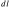 weights in all–a number that is not only far smaller than , but is actually independent of , the image size. thus, by injecting some prior knowledge–namely, knowledge of adjacency and spatial invariance–we can develop models that have far fewer parameters and can learn much more quickly.
hidden units with distinct sets of weights. this means that there are 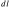 weights in all–a number that is not only far smaller than , but is actually independent of , the image size. thus, by injecting some prior knowledge–namely, knowledge of adjacency and spatial invariance–we can develop models that have far fewer parameters and can learn much more quickly.
usually an image is stored in memory as a 2d array (or matrix), each cell containing 3 different values for RGB (red,green,blue), which forms a 3 dimensional array or a tensor of order 3, which means the network needs to accept tensors as inputs.
convolutional layers
a convolutional neural network is one that contains spatially local connections, at least in the early layers which we call convolutional layers, and has patterns of weights that are replicated across the units in each layer. a pattern of weights that is replicated across multiple local regions is called a kernel which is applied with a convolution.
in practice, multiple kernels are learned at each convolutional layer, suppose the input to the 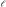-th layer is an order 3 tensor with size 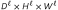, a kernel would also be an order 3 tensor with size 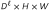 (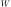 and 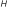 are the dimensions of the kernel and they differ from 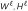, but the depth of both the image and tensor should be equal for the result of the convolution to be of lower dimensionality), assuming 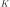 kernels are used (in other words, feature maps), the tensor of kernels (or weights) would be an order 4 tensor in 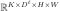, assuming a stride of 1, the output  would be a tensor of the third order and of size which is composed of feature maps.
would be a tensor of the third order and of size which is composed of feature maps.
its important to maintain the order of dimensions as depth X height X width, because thats the order i use everywhere
 at the first layer, the image is stored as a tensor of order 3 of depth 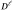, each layer of this tensor is basically a matrix we call a feature map or channel, so at each layer, the image is stored as nested layers of feature maps, it might be easier to take the input to the first layer as an example, which can be thought of as a set of 3 feature maps of RGB values.
at the first layer, the image is stored as a tensor of order 3 of depth 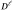, each layer of this tensor is basically a matrix we call a feature map or channel, so at each layer, the image is stored as nested layers of feature maps, it might be easier to take the input to the first layer as an example, which can be thought of as a set of 3 feature maps of RGB values.
pooling layers and downsampling
a pooling layer in a neural network summarizes a set of adjacent units from the preceding pooling layer with a single value. pooling works just like a convolution layer, with a kernel size l and stride 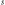, but the operation that is applied is fixed rather than learned.
typically, no activation function is associated with the pooling layer. there are two common forms of pooling:
- average-pooling computes the average value of its inputs. this is identical to concvolution with a uniform kernel vector 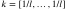. if we set 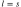, the effect is to coarsen the resolution of the image–to downsample it–by a factor of . an object that occupied, say, 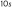 pixels, would now occupy only 10 pixels after pooling. the same learned classifier that would be able to recognize the object at a size of 10 pixels in the original image would now be able to recognize that object in the pooled image, even if it was too big to recognize in the original image. in other words, average-pooling facilitates multiscale recognition. it also reduces the number of weights required in subsequent layers, leading to lower computational cost and possibly faster learning.
- max-pooling computes the maximum value of its inputs. it can also be used purely for downsampling, but it has a somewhat different semantics. suppose we applied max-pooling to a layer with the values [5,9,4]: the result would be a 9, indicating that somewhere in the input image there is a darker dot that is detected by the kernel. in other words, max-pooling acts as a kind of logical disjunction, saying that a feature exists somewhere in the unit's receptive field.
if the goal is to classify the image into one of  categories, then the final layer of the network will be a softmax with output units. the early layers of the CNN are image-sized, so somewhere in between there must be significant reductions in layer size. convolution layers and pooling layers with stride larger than 1 all serve to reduce the layer size. it's also possible to reduce the layer size simply by having a fully connected layer with fewer units than the preceding layer. CNNs often have one or two such layers preceding the final softmax layer.
categories, then the final layer of the network will be a softmax with output units. the early layers of the CNN are image-sized, so somewhere in between there must be significant reductions in layer size. convolution layers and pooling layers with stride larger than 1 all serve to reduce the layer size. it's also possible to reduce the layer size simply by having a fully connected layer with fewer units than the preceding layer. CNNs often have one or two such layers preceding the final softmax layer.
let 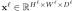 be the input to the -th pooling layer, the pooling operation requires no parameters (the matrix of weights is nulled), hence parameter learning is not needed for this layer, let the spatial extent (dimensions) of the pooling be , assume that divides and divides , the output of pooling ( or equivalently 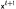) will be an order 3 tensor of size , with
a pooling layer operates upon  channel by channel independently. within each channel, the matrix with elements are divided into nonoverlapping subregions, each subregion being in size. the pooling operator then maps a subregion into a single number.
channel by channel independently. within each channel, the matrix with elements are divided into nonoverlapping subregions, each subregion being in size. the pooling operator then maps a subregion into a single number.
where 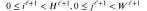, and 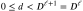.
since pooling layers have no weights they arent directly connected to their preceding layer, so during backpropagation, we cant directly tell what subregion of the previous layer each pixel in corresponds to, but we can reverse the pooling operation to "decode" the values from back to . assuming a max-pooling layer, we need a triplet  to pinpoint one element in the input , and another triplet 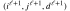 to locate one element in . assuming a max-pooling layer (process is the same for average-pooling), the pooling output 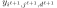 comes from 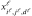, iff the following conditions are met:
to pinpoint one element in the input , and another triplet 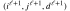 to locate one element in . assuming a max-pooling layer (process is the same for average-pooling), the pooling output 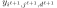 comes from 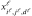, iff the following conditions are met:
- they are in the same channel
- the 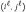-th spatial entry belongs to the 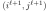-th subregion
- the -th spatial entry is the largest one in that subregion
translating these conditions into equations, we get
flatten layer
a layer that takes a tensor and vectorizes or flattens it, turning it into a 1d vector, it doesnt need any parameters.
fully connected convolutional layers
suppose the input of a layer has size . if we use convolution kernels whose size is , then such kernels form an order 4 tensor in . the output would be 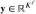, which is why these layers are sometimes used as flatten layers.
it is obvious that to compute any element in , we need to use all elements in the input . hence, this layer is a fully connected layer, but can be implemented as a convolution layer. hence, we do not need to derive learning rules for a fully connected layer separately.
if the data has already been flattened in a preceding layer, then the input size would be , we use kernels of size 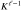, which form a 2d matrix we can call  of size 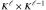. the convolution 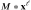, is exactly the same as the matrix multiplication ( multiplied by the transpose of the vector ), which results in a matrix of size 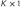, again meaning is just a vector of size , .
of size 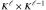. the convolution 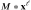, is exactly the same as the matrix multiplication ( multiplied by the transpose of the vector ), which results in a matrix of size 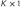, again meaning is just a vector of size , .
because the convolution operation in this layer is equal to a matrix multiplication, the fully connected layers here behave in the same manner as in simple multilayer perceptrons.
notice that here also equals the number of units in the -th layer.
full example
consider the following network:
 let denote the
let denote the  th kernel of the th layer whose dimensions are denoted by (depth,height and width of the kernel tensor, respectively, although depth is irrelevant here), where 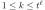, such that
th kernel of the th layer whose dimensions are denoted by (depth,height and width of the kernel tensor, respectively, although depth is irrelevant here), where 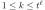, such that  is the number of kernels in the th layer, let denote the tensor of weights of layer , let denote the input to the th layer, let denote the output of the th layer, let denote the output before the activation function
(im using a different notation than in the image but it should be obvious which is which)
the parameters are
is the number of kernels in the th layer, let denote the tensor of weights of layer , let denote the input to the th layer, let denote the output of the th layer, let denote the output before the activation function
(im using a different notation than in the image but it should be obvious which is which)
the parameters are
- 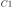 or 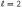, 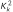 of size 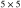 and 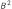 of size 6, 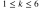
- 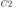 or 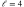, 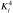 of size and of size 2, 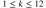 (size of the kernel is different from in the original figure)
- or 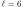, of size 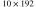 and 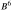 of size 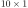
feedforwarding for convolutional layer or :
where (i think its better to keep general notation than write 2 explicitly), , , taken from this convolution example here 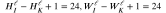, the dimensions of the output are 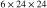 feedforwarding for average pooling layer 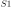 or : in words, we iterate through each block of size (in each kernel) and pool it into a single pixel, here the size of the pooling kernels is and the result is of dimensions feedforwarding for convolutional layer or :
where , output is of dimensions , we use for the depth of the image because in truth what we're finding is which is equal to but we omit an index of because its "implied" when its to the left
we use  as the index to because originally it would've been some variable index, but the result of the convolution is a tensor of order 2 (because the operands of the convolution have the same depth), but originally its meant ot be of order 3 (operands are of order 3), so we are "redimensioning" the result implicitly, if we were to use a variable, e.g. , would turn out to equal just 0, because substituting would result in an "overflow" in the summation, as when , we get , which isnt defined (max index is not ), therefore isnt defined and in all cases, so we might aswell just write 0 or not consider it at all since adding 0 wouldnt affect a number.
as the index to because originally it would've been some variable index, but the result of the convolution is a tensor of order 2 (because the operands of the convolution have the same depth), but originally its meant ot be of order 3 (operands are of order 3), so we are "redimensioning" the result implicitly, if we were to use a variable, e.g. , would turn out to equal just 0, because substituting would result in an "overflow" in the summation, as when , we get , which isnt defined (max index is not ), therefore isnt defined and in all cases, so we might aswell just write 0 or not consider it at all since adding 0 wouldnt affect a number.
feedforwarding for average pooling layer or : here the size of the kernels is aswell, the output is of dimensions vectorization before fully connected layer (may have its own layer): the output is of size feedforwarding for fully connected layer or :
in the image, the output layer and the last fully connected layer are treated as separate layers, this makes little sense because that way the fully connected layers would have no parameters, here we treat them as a single fully connected layer
see not-convnet-I-drop-index as to why i wrote
let denote the flipping of a matrix  over both axes so that the indicies may be reversed, i.e. (a negative index implies an index that is subtracted from the size of the dimension along with the value 1). we can show that this layer resembles the usual fully connected layer from simple multilayer perceptrons by turning the convolution into matrix multiplication:
over both axes so that the indicies may be reversed, i.e. (a negative index implies an index that is subtracted from the size of the dimension along with the value 1). we can show that this layer resembles the usual fully connected layer from simple multilayer perceptrons by turning the convolution into matrix multiplication:
![\begin{align*}
\hat Y^\ell[k] &= \phi\left(\sum_{x=0}^{W_K^\ell-1}\vec{v}[x]K_k^\ell[W_K^\ell-x-1]+B^\ell[k]\right)\\
&= \phi\left(\sum_{x=0}^{W_K^\ell-1}K_k^\ell[W_K^\ell-x-1]\vec{v}[x]+B^\ell[k]\right)\\
&= \phi\left(\sum_{x=1}^{W_K^\ell}K_k^\ell[W_K^\ell-x]\vec{v}[x-1]+B^\ell[k]\right)\\
&= \phi\left(\sum_{x=1}^{W_K^\ell}flip(K^\ell)[k,x-1]\vec{v}[x-1]+B^\ell[k]\right)
\end{align*}](ltx/c847b544498.svg)
where (layer contains 10 fully connected kernels), the output is of size 10, here and the size of each kernel is () in vector notation, we write (notice that results in a vector): at this point we'd have arrived at the output layer and the output of the neural network would be or simply (the output of the last fully connected layer which itself is the output layer), assuming the quadratic loss function, and assuming the desired output is , the loss function would be defined as: now we can begin to backpropagate the error, followed by an object denotes the error at that specific object or point: backpropagation for fully connected layer or :
![\begin{align*}
\Delta K^\ell_k[i] &= \frac{\partial L}{\partial K^\ell_k[i]}\\
&= \frac{\partial L}{\partial \hat Y^\ell[k]}\frac{\partial \vec{y}[k]}{\partial K^\ell_k[i]}\\
&= (\hat Y^\ell[k]-\vec{y}[k])\frac{\partial}{\partial K^\ell_k[i]}\phi\left(\sum_{x=0}^{W_K^\ell-1}\vec{v}[x]K_k^\ell[W_K^\ell-x-1]+B^\ell[k]\right)\\
&= (\hat Y^\ell[k]-\vec{y}[k])\phi'\left(\sum_{x=0}^{W_K^\ell-1}\vec{v}[x]K_k^\ell[W_K^\ell-x-1]+B^\ell[k]\right)\vec{v}[W_K^\ell-i-1]\\
&= (\hat Y^\ell[k]-\vec{y}[k])\phi'(S^\ell[k])\vec{v}[W_K^\ell-i-1]
\end{align*}](ltx/9bc2ba31dc2.svg)
where , here , notice that let , whose size would be 10, then:
we arrived at an equation in matrix notation which is convenient ( was a column vector initially) backpropagation through flatten layer before recall that during feedforwarding, the flatten layer turned the tensor of feature maps which is of the third order into a single vector, the deltas defined by the layer during backpropagation is a vector aswell, which we need to turn them into a tensor of the third order that resembles the delta at each entry in the tensor of the feature maps first we find the delta at each entry in the vector:
![\begin{align*}
\Delta\vec{v}[j] &= \frac{\partial L}{\partial \vec{v}[j]}\\
&= \sum_{k=0}^{t^\ell} \frac{\partial L}{\partial \vec{y}[k]}\frac{\partial \vec{y}[k]}{\partial \vec{v}[j]}\\
&= \sum_{k=0}^{t^\ell} (\hat Y^\ell[k]-\vec{y}[k])\frac{\partial}{\partial\vec{v}[j]}\phi\left(\sum_{x=0}^{W_K^\ell-1}\vec{v}[x]K_k^\ell[W_K^\ell-x-1]+B^\ell[k]\right)\\
&= \sum_{k=0}^{t^\ell} (\hat Y^\ell[k]-\vec{y}[k])\phi'(S^\ell[k])\frac{\partial}{\partial\vec{v}[j]}\sum_{x=0}^{W_K^\ell-1}\vec{v}[x]K_k^\ell[W_K^\ell-x-1]+B^\ell[k]\\
&= \sum_{k=0}^{t^\ell} (\hat Y^\ell[k]-\vec{y}[k])\phi'(S^\ell[k])K^\ell_k[W_K^\ell-j-1]\\
&= \sum_{k=0}^{t^\ell} \Delta S^\ell[k]K^\ell_k[W_K^\ell-j-1]\\
&= \sum_{k=0}^{t^\ell} \Delta S^\ell[k]flip(K^\ell_k)[j]\\
\implies \Delta \vec{v} &= \Delta S^\ell \times flip(K_k^\ell)^T
\end{align*}](ltx/e4621209388.svg)
notice that where because 192 is the total size of the tensor received from during feedforwarding now the vector of deltas needs to be reshaped into a tensor of the third order so that we may then send it to the next layer in the process, , which is a pooling layer the reshaping should be the exact inverse of the row-major vectorization we did during feedforwarding such that , here , note that backpropagation through average pooling layer : recall that this layer downscaled the input given to it during feedforwarding from its preceding layer , so during backpropagation, when it responds to the next layer which is the one it got the initial message from during feedforwarding it needs to scale its message back up to the dimensions of the input it got from that layer, that "message" would be the deltas: backpropagation through convolutional layer :
![\begin{align*}
\Delta K^\ell_k[r,u,v] &= \frac{\partial L}{\partial K_k^\ell[r,u,v]}\\
&= \sum_{i=0}^{H_I^{\ell+0}-1} \sum_{j=1}^{W_I^{\ell+0}-1} \frac{\partial L}{\partial \hat Y_k^\ell[i,j]}\frac{\partial \hat Y_k^\ell[i,j]}{\partial K_k^\ell[r,u,v]}\\
&= \sum_{i=0}^{H_I^{\ell+1}-1} \sum_{j=0}^{W_I^{\ell+1}-1} \Delta\hat Y_k^\ell[i,j]\frac{\partial}{\partial K_k^\ell[r,u,v]}\phi\left(\sum_{z=0}^{D_K^\ell-1}\sum_{y=0}^{H_K^\ell-1}\sum_{x=0}^{W_K^\ell-1}I^\ell[z,y+i,x+j]K^\ell_k[D_K^\ell-z-1,H_K^\ell-y-1,W_K^\ell-x-1]+B^\ell[k]\right)\\
&= \sum_{i=0}^{H_I^{\ell+1}-1} \sum_{j=0}^{W_I^{\ell+1}-1} \Delta\hat Y_k^\ell[i,j]\phi'(S^\ell_k[i,j])I^\ell[D_K^\ell-r-1,H_K^\ell-u-1+i,W_K^\ell-v-1+j]
\end{align*}](ltx/83ba40c54ce.svg)
where see not-convnet-I-indicies about the indicies of (the note talks about the indicies of but the same fact applies to here) let be the error after (after in terms of backpropagation, before in terms of feedforwarding) the activation function: then: now for the bias:
![\begin{align*}
\Delta B^\ell[k] &= \frac{\partial L}{\partial B^\ell[k]}\\
&= \sum_{i=0}^{H_I^{\ell+1}-1} \sum_{j=0}^{W_I^{\ell+1}-1} \frac{\partial L}{\partial \hat Y_k^\ell[i,j]}\frac{\partial \hat Y_k^\ell[i,j]}{\partial B^\ell[k]}\\
&= \sum_{i=0}^{H_I^{\ell+1}-1} \sum_{j=0}^{W_I^{\ell+1}-1} \Delta\hat Y_k^\ell[i,j]\frac{\partial}{\partial B^\ell[k]}\phi\left(\sum_{z=0}^{D_K^\ell-1}\sum_{y=0}^{H_K^\ell-1}\sum_{x=0}^{W_K^\ell-1}I^\ell[z,y+i,x+j]K^\ell_k[D_K^\ell-z-1,H_K^\ell-y-1,W_K^\ell-x-1]+B^\ell[k]\right)\\
&= \sum_{i=0}^{H_I^{\ell+1}-1} \sum_{j=0}^{W_I^{\ell+1}-1} \Delta\hat Y_k^\ell[i,j]\phi'(S_k^\ell[i,j])\\
&= \sum_{i=0}^{H_I^{\ell+1}-1} \sum_{j=0}^{W_I^{\ell+1}-1} \Delta S^\ell_k[i,j]
\end{align*}](ltx/e996c8f593a.svg)
now we find the deltas at or , because thats what the next layer in backpropagation, , needs
![\begin{align}
\Delta I^\ell[r,u,v] &= \frac{\partial L}{\partial I^\ell[r,u,v]}\\
&= \sum_{k=0}^{D_I^{\ell+1}-1} \sum_{i=0}^{H_I^{\ell+1}-1} \sum_{j=0}^{W_I^{\ell+1}-1} \frac{\partial L}{\partial \hat Y_k^\ell[i,j]}\frac{\partial \hat Y_k^\ell[i,j]}{\partial I^\ell[r,u,v]}\\
&= \sum_{k=0}^{D_I^{\ell+1}-1} \sum_{i=0}^{H_I^{\ell+1}-1} \sum_{j=0}^{W_I^{\ell+1}-1} \Delta\hat Y_k^\ell[i,j]\frac{\partial}{\partial I^\ell[r,u,v]}\phi\left(\sum_{z=0}^{D_K^\ell-1}\sum_{y=0}^{H_K^\ell-1}\sum_{x=0}^{W_K^\ell-1}I^\ell[z,y+i,x+j]K^\ell_k[D_K^\ell-z-1,H_K^\ell-y-1,W_K^\ell-x-1]+B^\ell[k]\right)\\
&= \sum_{k=0}^{D_I^{\ell+1}-1} \sum_{i=0}^{H_I^{\ell+1}-1} \sum_{j=0}^{W_I^{\ell+1}-1} \Delta\hat Y_k^\ell[i,j]\phi'(S_k^\ell[i,j])K_k^\ell[D_K^\ell-r-1,H_K^\ell-u-1+i,W_K^\ell-v-1+j]\\
&= \sum_{k=0}^{D_I^{\ell+1}-1} \sum_{i=0}^{H_I^{\ell+1}-1} \sum_{j=0}^{W_I^{\ell+1}-1} \Delta S_k^\ell[i,j] K_k^\ell[\underbrace{D_K^\ell-r-1,H_K^\ell-u-1+i,W_K^\ell-v-1+j}_{(D^\ell_K,H_K^\ell,W_K^\ell)-(r,u,v)-(1,1,1)+(0,i,j)}] \label{eq-convnet-1}
\end{align}](ltx/f1ba296ec5b.svg)
such that . here, are the deltas that need to be passed onto the next layer
its important to notice how in eq-convnet-1 the indicies , which are indexing are each subtracted from the dimensions of the kernels and then the indicies which are indexing are added element-wise aswell, this is important as its a property that is later exploited in the code for backpropagation i should also note that the process of backpropagation in a convolutional layer, just like the feedforwarding process, resembles that of a convolutional one, i have yet to find out how to show that this follows from these math formulas furthermore, here the expression eq-convnet-1 would be correct only when the indicies of are in the correct range, so not less than 0 and not bigger than the size of the dimension theyre in, i think this happens because a single doesnt affect all entries in the output but we're differentiating with respect to all entries in the output, perhaps in the future i'll improve upon these formulas
architecture
LeNet-5
the lenet-5 one of the earliest and most basic CNN architecture.
it consists of 7 layers. the first layer consists of an input image with dimensions of 32x32. it is convolved with 6 filters of size 5x5 resulting in dimension of 28x28x6. the second layer is a pooling operation with a filter of size 2×2 and stride of 2. hence the resulting image dimension will be 14x14x6.
similarly, the third layer also involves in a convolution operation with 16 filters of size 5x5 followed by a fourth pooling layer with similar filter size of 2x2 and stride of 2. thus, the resulting image dimension will be reduced to 5x5x16.
once the image dimension is reduced, the fifth layer is a fully connected convolutional layer with 120 filters each of size 5×5. in this layer, each of the 120 units in this layer will be connected to the 400 (5x5x16) units from the previous layers. the sixth layer is also a fully connected layer with 84 units.
the final seventh layer will be a softmax output layer with possible classes depending upon the number of classes in the dataset.

common lisp implementation
an abstract structure for networks
after having studied cnn's, i realied i need a more flexible data structure for networks than what i had in simple feedforward networks, because with simple perceptrons i only used one type of layer, with cnn's we need to be able to build networks with arbitrary layers, so i dropped my previous progress and started over:
(defgeneric feedforward (layer x) (:documentation "feed-forward, return activations to pass to next layer")) (defgeneric propbackward (layer layer-x layer-y layer-y-unactivated propped-deltas learning-rate) (:documentation "backward-popagation, return gradients to pass to preceding layer")) (defclass layer () ((weights :initarg :weights :initform nil :accessor layer-weights) ;; weights going into the layer's units (biases :initarg :biases :initform nil :accessor layer-biases) ;; per-layer activation functions (same activation function for all units in the layer) (activation-function :initarg :activation-function :initform #'relu :accessor layer-activation-function) (activation-function-derivative :initarg :activation-function-derivative :initform #'relu-derivative :accessor layer-activation-function-derivative) ;; use tensor-activation-function and tensor-activation-function-derivative only if you want per-unit special activation functions, they take the indicies list (multidimensional index) of a unit and return a function to use for activation (tensor-activation-function :initarg :tensor-activation-function :accessor layer-tensor-activation-function) (tensor-activation-function-derivative :initarg :tensor-activation-function-derivative :accessor layer-tensor-activation-function-derivative))) (defclass network () ((layers :initarg :layers :initform nil :accessor network-layers) (learning-rate :initform 0.0005 :initarg :learning-rate :accessor network-learning-rate))) (defun make-network (&key learning-rate layers) (make-instance 'network :layers layers :learning-rate (or learning-rate 0.0005))) (defmethod network-feedforward ((n network) x) "x is a tensor, feedforward to the last layer and return its output" (with-slots (layers) n ;; last-out is needed to keep the output of the lastly feedforwarded layer, the output of the layers is pushed onto the list which means they are stored in reverse order, to be later popped also in "reverse" order for backprop, this means that the first entry in out-list corresponds to the output layer, this should be better than storing them in normal order because we use a list and later we need to iterate from the output of the last layer to the first layer, each entry in the list is a cons with the first element as the activated output and second as the unactivated output (let ((last-out x) (out-list nil)) (loop for layer in layers do (multiple-value-bind (new-out new-out-unactivated) (feedforward layer last-out) (push (cons new-out new-out-unactivated) out-list) (setf last-out new-out))) out-list)))
convolutional layer
we use the relu by default to reduce the risk of a vanishing gradient
i should note that later on, during the writing of propbackward for convolutional layers, i realized that i needed some more data from feedforward than im currently returning, so feedforward functions needed some slight modifications which also meant i needed to rewrite the network-feedforward function
i needed more data like the unactivated output tensor of a layer, not just the final output of the layer, and the input to the layer
it also happened to me during the previous implementation in feedforward neural network, but it seems i didnt learn from my first encounter with that brickwall, lol.
but which weights should a layer object store? the weights that go into it, i.e. the layers that come out of the previous layer and land on this layer? or should it store the weights that are represented by the connections that come out of it and reach for the next layer in the network? at first it seemed the latter made more sense, but thats not the case, lets reconsider the equation for a neuron's activation eq-neuron, a neurons value is determined by the weights that go into it from the previous layer, not the weights going out of it into the next one, and since a layer is composed of units, and each unit depends on the weights coming into it, it already makes sense that we store the weights that go into the layer in its object, not the weights coming out of it, plus, if we were to use the second approach a layer would have to store the activation function of the next layer not the activation function of itself, which makes no sense.
i also went through the source code of tensorflow and it seems this is what they're doing aswell. this will be the assumption in my code.
time to implement different types of layers, starting with convolutional layer:
(defclass convolutional-layer (layer) () (:documentation "a layer that arbitrary dimensions for its weights tensor, and convolves it with an arbitrary input tensor (convolution layer of arbitrary dimensions), the weights tensor should be 1 order higher that the input tensor, e.g. if the input tensor is a 3d tensor (image with feature maps), the shape of the weights tensor should be of 4 dimensions (4d tensor), the output tensor of the layer would be of the same order as the input tensor")) (defun make-convolutional-layer (&key dims activation-function activation-function-derivative tensor-activation-function tensor-activation-function-derivative) "consutrctor for convolutional layers" (make-instance 'convolutional-layer :weights (random-tensor dims) :biases (random-tensor (car dims)) :activation-function activation-function :activation-function-derivative activation-function-derivative :tensor-activation-function tensor-activation-function :tensor-activation-function-derivative tensor-activation-function-derivative)) (defmethod feedforward ((l convolutional-layer) x) "x is an arbitrary tensor" (with-slots (weights biases activation-function tensor-activation-function) l (let* ((num-kernels (array-dimension weights 0)) (convolution-out-size (mapcar (lambda (img-d ker-d) (- img-d (1- ker-d))) (array-dimensions x) (cdr (array-dimensions weights)))) (out (make-array (append (list num-kernels) convolution-out-size)))) (loop for kernel-idx from 0 below num-kernels do (set-array-nth out (array-map (lambda (cell) (+ cell (aref biases kernel-idx))) (tensor-convolution x (array-nth weights kernel-idx))) kernel-idx)) ;; we return 2 values, the output tensor and the unactivated output tensor (if tensor-activation-function ;; apply per-unit activation functions (values (array-map-indicies out tensor-activation-function) out) ;; apply single activation function to all units in the layer (values (array-map activation-function out) out))))) (defclass 3d-convolutional-layer (convolutional-layer) () (:documentation "a convolutional layer with 4d weights tensor and 3d input/output tensors, the depths of the input and weight tensors should be the same, this is used for convolving images with feature maps (channels) to see the difference between this and the parent class consider the following examples: CL-USER> (array-dimensions (let ((l (make-convolutional-layer :dims '(2 3 3 3)))) (feedforward l (random-tensor '(3 6 6))))) => (2 1 4 4) CL-USER> (array-dimensions (let ((l (make-3d-convolutional-layer-from-dims :dims '(2 3 3 3)))) (feedforward l (random-tensor '(3 6 6))))) => (2 4 4) ")) (defmethod feedforward :around ((l 3d-convolutional-layer) x) "grab the output of the parent arbitrary-convolution class, reshape it and return it, as there is always redundant dimension in the 4d tensor, this happens because the tensors (input and weights) have the same depth when doing image convolution" (multiple-value-bind (out unactivated-out) (call-next-method) ;; output of parent class' feedforward (let ((actual-convolution-out-size (append (list (array-dimension out 0)) (cdr (cdr (array-dimensions out)))))) (values (make-array actual-convolution-out-size :displaced-to out) (make-array actual-convolution-out-size :displaced-to unactivated-out))))) (defun make-3d-convolutional-layer-from-dims (&key dims activation-function activation-function-derivative tensor-activation-function tensor-activation-function-derivative) "consutrctor for convolutional layers" (make-instance '3d-convolutional-layer :activation-function activation-function :activation-function-derivative activation-function-derivative :tensor-activation-function tensor-activation-function :tensor-activation-function-derivative tensor-activation-function-derivative :weights (random-tensor dims) :biases (random-tensor (car dims)))) (defun make-3d-convolutional-layer (&key activation-function activation-function-derivative num-kernels kernel-depth kernel-height kernel-width tensor-activation-function tensor-activation-function-derivative) "consutrctor for convolutional layers" (make-instance '3d-convolutional-layer :activation-function activation-function :activation-function-derivative activation-function-derivative :tensor-activation-function tensor-activation-function :tensor-activation-function-derivative tensor-activation-function-derivative :weights (random-tensor (list num-kernels kernel-depth kernel-height kernel-width)) :biases (random-tensor num-kernels)))
pooling layer
pooling layer:
(defclass pooling-layer (layer) ((rows :initarg :rows :accessor pooling-layer-rows) (cols :initarg :cols :accessor pooling-layer-cols) (pooling-function :initarg :pooling-function :accessor pooling-layer-function) (unpooling-function :initarg :unpooling-function :accessor pooling-layer-unpooling-function))) ;; unpooling-function will make sense when you read later on (defun max-pooling-function (myvec) (reduce #'max myvec)) (defun average-pooling-function (myvec) (/ (reduce #'+ myvec) (length myvec))) (defun make-pooling-layer (&key rows cols pooling-function unpooling-function) (make-instance 'pooling-layer :rows rows :cols cols :pooling-function (or pooling-function #'average-pooling-function) :unpooling-function (or unpooling-function #'average-unpooling-function))) (defmethod feedforward ((l pooling-layer) x) "x is a tensor of the third order, which in case of the first layer is the actual image" (with-slots (rows cols pooling-function) l (let* ((num-channels (array-depth x)) (img-rows (array-rows x)) (img-cols (array-cols x)) (out-rows (/ img-rows rows)) (out-cols (/ img-cols cols)) (out (make-array (list num-channels out-rows out-cols)))) (loop for channel-idx from 0 below num-channels do (loop for img-row-idx from 0 below img-rows by rows do (loop for img-col-idx from 0 below img-cols by cols do (let ((out-row-idx (/ img-row-idx rows)) (out-col-idx (/ img-col-idx cols))) (setf (aref out channel-idx out-row-idx out-col-idx) (funcall pooling-function (vectorize-array (subarray x (list channel-idx img-row-idx img-col-idx) (list rows cols))))))))) out)))
flatten layer
a flatten layer, which is used to reduce dimensionality to 1d (to vectorize the input tensor), and doesnt have any parameters:
(defclass flatten-layer (layer) ()) (defun make-flatten-layer () (make-instance 'flatten-layer)) (defmethod feedforward ((l flatten-layer) x) (vectorize-array x))
dense layer
a dense layer, or a fully connected layer:
(defclass dense-layer (convolutional-layer) ()) (defun make-dense-layer (&key num-units prev-layer-num-units activation-function activation-function-derivative tensor-activation-function tensor-activation-function-derivative) (make-instance 'dense-layer :activation-function activation-function :activation-function-derivative activation-function-derivative :tensor-activation-function tensor-activation-function :tensor-activation-function-derivative tensor-activation-function-derivative :weights (random-tensor (list num-units prev-layer-num-units)) :biases (random-tensor num-units))) (defmethod feedforward :around ((l dense-layer) x) "return the output of the convolution, properly reshaped" (multiple-value-bind (out unactivated-out) (call-next-method) (values (make-array (list (array-dimension out 0)) :displaced-to out) (make-array (list (array-dimension out 0)) :displaced-to unactivated-out))))
test code
feedforwarding test in convolutional layers, with an (randomly generated) input image of depth 3 (3 channels), width 6 and height 6 (in the code columns and rows, respectively), like in fig-convlayer:
(let ((l (make-convolutional-layer :dims '(5 3 4 3) :activation-function #'relu :activation-function-derivative #'relu-derivative))) (array-dimensions (feedforward l (random-tensor '(3 10 6)))))
(5 1 7 4)
(let ((l (make-3d-convolutional-layer-from-dims :dims '(5 3 4 3) :activation-function #'relu :activation-function-derivative #'relu-derivative))) (array-dimensions (feedforward l (random-tensor '(3 10 6)))))
(5 7 4)
the code outputs a tensor of size 2x4x4, as expected and as seen in the figure.
feedforwarding test in pooling layers:
(let ((l (make-pooling-layer :rows 16 :cols 16))) (feedforward l (random-tensor '(3 32 32))))
#3A(((-0.09865912f0 0.0050482843f0) (0.033965267f0 0.009567747f0))
((-0.048119776f0 0.053631075f0) (0.0039087785f0 -0.045654505f0))
((0.011538963f0 0.012444877f0) (0.009892253f0 0.018327955f0)))
feedforwarding test in dense layers:
(let ((l (make-dense-layer :num-units 20 :prev-layer-num-units 30 :activation-function #'sigmoid :activation-function-derivative #'sigmoid-derivative))) (feedforward l (random-tensor '(30))))
#(0.07897233f0 0.6648786f0 0.5233108f0 0.16540164f0 0.5859843f0 0.3620081f0 0.881382f0 0.6328014f0 0.9851791f0 0.54547656f0 0.2188674f0 0.46183386f0 0.52967626f0 0.255327f0 0.5279645f0 0.70072246f0 0.022833973f0 0.043903537f0 0.5002063f0 0.37229472f0) #(-2.4563925f0 0.6851117f0 0.09331077f0 -1.6185739f0 0.34738904f0 -0.566659f0 2.0055835f0 0.54425377f0 4.196786f0 0.18241026f0 -1.2722789f0 -0.15296215f0 0.11884463f0 -1.0704002f0 0.11197477f0 0.8507405f0 -3.756407f0 -3.080864f0 8.253455f-4 -0.52238494f0)
feedforwarding test in flatten layers:
(feedforward (make-flatten-layer) (random-tensor '(2 3 3)))
#(0.7158413f0 -0.65535855f0 -0.95929027f0 0.8278158f0 -0.56471443f0 -0.40639305f0 0.8319006f0 -0.039112806f0 -0.61821413f0 -0.8546965f0 -0.8576379f0 -0.77950644f0 0.54494023f0 -0.5361223f0 -0.012234688f0 0.868943f0 -0.96434f0 -0.61873984f0)
now that we have implemented the necessary layers, we can start building convolutional networks, we start with LeNet-5:
(defparameter *lenet5* (make-network :layers (list (make-3d-convolutional-layer-from-dims :dims '(6 1 5 5) :activation-function #'relu :activation-function-derivative #'relu-derivative) (make-pooling-layer :rows 2 :cols 2) (make-3d-convolutional-layer-from-dims :dims '(16 6 5 5) :activation-function #'relu :activation-function-derivative #'relu-derivative) (make-pooling-layer :rows 2 :cols 2) (make-flatten-layer) (make-dense-layer :num-units 120 :prev-layer-num-units 400 :activation-function #'relu :activation-function-derivative #'relu-derivative) (make-dense-layer :num-units 84 :prev-layer-num-units 120 :activation-function #'relu :activation-function-derivative #'relu-derivative) (make-dense-layer :num-units 10 :prev-layer-num-units 84 :activation-function #'sigmoid :activation-function-derivative #'sigmoid-derivative))))
we can perform a simple feedforwarding test with a randomly permuted "image":
(car (network-feedforward *lenet5* (random-tensor '(1 32 32))))
(#(1.0 0 1.0 0 0 0 0 1.0 3.6099282e-22 1.0)
. #(542.2019 -1379.9155 469.97314 -319.0183 -235.80972 -294.26898 -628.3136
134.56656 -49.373184 454.5819))
we got 10 values out, as expected (the size of the output layer is 10)
convolutional layer backprop
its time to implement backpropagation! a table of the variables in the code and their counterparts in the math formulas:
| code | math |
|---|---|
layer-x |
|
layer-y |
|
layer-y-unactivated |
|
s-deltas |
|
x-deltas |
|
activation-function |
|
activation-function-derivative |
|
propped-deltas |
|
learning-rate |
 |
(defmethod propbackward ((l convolutional-layer) layer-x layer-y layer-y-unactivated propped-deltas learning-rate) "compute the gradients of the layer, propped-deltas is a tensor of the errors or 'deltas' at the output nodes which is propagated back from the succeeding layer in the network, layer-x is the input image tensor that was passed to the layer during feedforwarding, layer-y is the output of the layers' feedforwarding (activation of nodes), the assumption here is that the last dimensions of weight,image tensors are equal so that the image tensor keeps its rank/order, notice that (for now) this function assumes the equality of the order of input and output tensors" (with-slots (weights biases activation-function-derivative tensor-activation-function-derivative) l ;; here we restore the dropped dimension, if any (a dimension is dropped if the tensors convolved have the same depth, which happens in your standard 3d convolutions with images, im not even sure why im writing code for a more general case..), we do this because its then easier to apply the math, note that all three arrays layer-y,layer-y-unactivated,propped-deltas here have the same dimensions, also note that here reshaping the arrays by adding a dimension with size 1 doesnt affect the arrays actual sizes, only their dimensionality and order/rank (when (not (eq (length (array-dimensions weights)) (length (array-dimensions layer-y)))) (setf layer-y (make-array (append (list (array-dimension layer-y 0) 1) (cdr (array-dimensions layer-y))) :displaced-to layer-y)) (setf layer-y-unactivated (make-array (append (list (array-dimension layer-y-unactivated 0) 1) (cdr (array-dimensions layer-y-unactivated))) :displaced-to layer-y-unactivated)) (setf propped-deltas (make-array (append (list (array-dimension propped-deltas 0) 1) (cdr (array-dimensions propped-deltas))) :displaced-to propped-deltas))) (let ((x-deltas (make-array (array-dimensions layer-x))) ;; \Delta I in the math section, the deltas at the inputs, these are to be backpropped (s-deltas (make-array (array-dimensions layer-y)))) ;; \Delta S in the math, the deltas "after" the activation function ;; compute s-deltas (loop for layer-y-idx from 0 below (array-size layer-y) do (let* ((layer-y-indicies (array-index-row-major layer-y layer-y-idx)) (layer-y-unactivated-entry (apply #'aref (append (list layer-y-unactivated) layer-y-indicies))) ;; S^\ell[k,i,j] (propped-delta (apply #'aref (append (list propped-deltas) layer-y-indicies)))) ;; \Delta\hat Y[k,i,j] (if tensor-activation-function-derivative (setf (apply #'aref (append (list s-deltas) layer-y-indicies)) (* propped-delta (funcall tensor-activation-function-derivative layer-y-unactivated layer-y-indicies))) (setf (apply #'aref (append (list s-deltas) layer-y-indicies)) (* propped-delta (funcall activation-function-derivative layer-y-unactivated-entry)))))) ;; compute x-deltas, this was replaced with the next sexp, im not sure if it even works but i feel like keeping it here, it is the code for the math in [[blk:eq-convnet-I-delta-1]] ;; (loop for layer-x-idx from 0 below (array-size layer-x) do ;; (let ((layer-x-indicies (array-index-row-major layer-x layer-x-idx))) ;; (loop for layer-y-idx from 0 below (array-size layer-y) do ;; (let* ((layer-y-indicies (array-index-row-major layer-y layer-y-idx)) ;; (s-delta (apply #'aref (append (list s-deltas) layer-y-indicies))) ;; ;; see [[blk:not-convnet-I-indicies]], this is the pattern for the indicies of the weight to be multiplied by the entry in the input ;; (weight-indicies (append (list (1- (array-dimension weights 0))) (mapcar #'+ (mapcar #'- (cdr (array-dimensions weights)) layer-x-indicies) (cdr layer-y-indicies) (make-list (length layer-x-indicies) :initial-element -1)))) ;; we add (..,-1,-1,-1) because in the math the indexing starts at 1 not 0 ;; (in-range t)) ;; ;; use in-range to check whether weight indicies are within the range of the weights tensor, again refer to [[blk:not-convnet-I-indicies]] ;; (loop for i from 0 below (length weight-indicies) do ;; (if (or (not (< (elt weight-indicies i) (array-dimension weights i))) ;; (< (elt weight-indicies i) 0)) ;; (setf in-range nil))) ;; (when in-range ;; (let* ((weight (apply #'aref (append (list weights) weight-indicies))) ;; (x-delta-to-add (* s-delta weight))) ;; ;; update an x-delta ;; (incf (apply #'aref (append (list x-deltas) layer-x-indicies)) x-delta-to-add))))))) ;; an updated solution to compute x-deltas discussed in [[any:optimization1]], first attempt ;; (loop for layer-x-idx from 0 below (array-size layer-x) do ;; (let ((layer-x-indicies (array-index-row-major layer-x layer-x-idx))) ;; (loop for weight-idx from 0 below (array-size weights) do ;; (let* ((weight-indicies (array-index-row-major weights weight-idx)) ;; (s-delta-indicies (append ;; (list (car weight-indicies)) ;; (mapcar #'- ;; layer-x-indicies ;; (cdr weight-indicies)))) ;; (desired-weight-indicies ;; (append ;; (list (car weight-indicies)) ;; (mapcar #'- ;; (cdr (array-dimensions weights)) ;; (cdr weight-indicies) ;; (make-list (length (cdr weight-indicies)) ;; :initial-element 1)))) ;; (in-range t)) ;; (loop for i from 0 below (length desired-weight-indicies) do ;; (if (or (not (< (elt desired-weight-indicies i) ;; (array-dimension weights i))) ;; (< (elt desired-weight-indicies i) 0)) ;; (setf in-range nil))) ;; (loop for i from 0 below (length s-delta-indicies) do ;; (if (or (not (< (elt s-delta-indicies i) ;; (array-dimension s-deltas i))) ;; (< (elt s-delta-indicies i) 0)) ;; (setf in-range nil))) ;; (when in-range ;; (let* ((weight (apply #'aref (append (list weights) ;; desired-weight-indicies))) ;; (s-delta (apply #'aref (append (list s-deltas) ;; s-delta-indicies))) ;; (x-delta-to-add (* s-delta weight))) ;; ;; update an x-delta ;; (incf (apply #'aref (append (list x-deltas) layer-x-indicies)) x-delta-to-add))))))) ;; third attempt for [[any:optimization1]], here we're dropping the second-to-highest dimension because we dont need to iterate over it for every entry in layer-x, this saves us alot of iterations as it actually reduces the exponent of the time complexity (each dimension is basically another nested for loop), currently this doesnt support cases where D_K != D_I (let ((needed-weight-dimensions (cons (car (array-dimensions weights)) (cdr (cdr (array-dimensions weights)))))) (loop for layer-x-idx from 0 below (array-size layer-x) do (let ((layer-x-indicies (array-index-row-major layer-x layer-x-idx))) (loop for weight-idx from 0 below (reduce #'* needed-weight-dimensions) do (let* ((weight-indicies (from-row-major needed-weight-dimensions weight-idx)) (s-delta-indicies (append (cons (car weight-indicies) (cons 0 nil)) (mapcar #'- (cdr layer-x-indicies) (cdr weight-indicies)))) (desired-weight-indicies (cons (car weight-indicies) (mapcar #'- (cdr (array-dimensions weights)) (cons (car layer-x-indicies) (cdr weight-indicies)) (make-list (length weight-indicies) :initial-element 1)))) (in-range t)) (loop for i from 0 below (length desired-weight-indicies) do (if (or (not (< (elt desired-weight-indicies i) (array-dimension weights i))) (< (elt desired-weight-indicies i) 0)) (setf in-range nil))) (loop for i from 0 below (length s-delta-indicies) do (if (or (not (< (elt s-delta-indicies i) (array-dimension s-deltas i))) (< (elt s-delta-indicies i) 0)) (setf in-range nil))) (when in-range (let* ((weight (apply #'aref (append (list weights) desired-weight-indicies))) (s-delta (apply #'aref (append (list s-deltas) s-delta-indicies))) (x-delta-to-add (* s-delta weight))) ;; update an x-delta (incf (apply #'aref (append (list x-deltas) layer-x-indicies)) x-delta-to-add)))))))) ;; update the biases ;; why are we iterating through biases as if its a multidimesional array/tensor? its just a vector, this is misleading, but im leaving it this way for now (loop for bias-idx from 0 below (array-size biases) do (let ((bias-indicies (array-index-row-major biases bias-idx)) (gradient 0) (needed-y-dimensions (cdr (array-dimensions layer-y)))) (loop for layer-y-idx from 0 below (reduce #'* needed-y-dimensions) do (let* ((layer-y-indicies (cons (car bias-indicies) (from-row-major needed-y-dimensions layer-y-idx))) (s-delta (apply #'aref (append (list s-deltas) layer-y-indicies)))) (incf gradient s-delta))) ;; update bias (decf (apply #'aref (cons biases bias-indicies)) (* learning-rate gradient)))) ;; update the weights (loop for weight-idx from 0 below (array-size weights) do (let ((weight-indicies (array-index-row-major weights weight-idx)) (gradient 0) (needed-y-dimensions (cdr (array-dimensions layer-y)))) ;; needed-y-dimensions are the dimensions we need to iterate through in the layer y, we dont need to iterate through the entire output as a weight is only connected to the output units that are connected to its kernel (loop for layer-y-idx from 0 below (reduce #'* needed-y-dimensions) do ;; add the kernel index to the layer-y-indicies (let* ((layer-y-indicies (cons (car weight-indicies) (from-row-major needed-y-dimensions layer-y-idx))) (s-delta (apply #'aref (append (list s-deltas) layer-y-indicies))) (i-indicies (mapcar #'+ (mapcar #'- (cdr (array-dimensions weights)) (cdr weight-indicies) (make-list (length (cdr weight-indicies)) :initial-element 1)) (cons 0 layer-y-indicies))) (in-range t)) ;; check if i-indicies are in the correct range (loop for i from 0 below (length i-indicies) do (if (or (not (< (elt i-indicies i) (array-dimension layer-x i))) (< (elt i-indicies i) 0)) (setf in-range nil))) (when in-range ;; (print (not (member (cons i-indicies layer-y-indicies) added :test #'equal))) (let ((i (apply #'aref (append (list layer-x) i-indicies)))) (incf gradient (* s-delta i)))))) ;; update weight (decf (apply #'aref (append (list weights) weight-indicies)) (* learning-rate gradient)))) x-deltas)))
now we need to write the propbackward function for networks so we can conduct simple propbackward tests before continuing
(defmethod network-propbackward ((n network) network-x network-y feedforward-out) "feedforward-out is the result of the network-feedforward function, its a list of cons' of out and unactivated-out, network-x and network-y should be the input and the desired output to the network, respectively" (with-slots (layers learning-rate) n (let* ((output-layer (car (car feedforward-out))) ;; initialize the propped deltas to (hat y - y), because we use squared error loss function (propped-deltas (array-map #'- output-layer network-y))) ;; iterate through each layer (loop for layer-index from (1- (length layers)) above -1 do ;; from the feedforward-out list, get the output of the current layer's feedforward (activated and non-activated), they are stored in reverse order so we use pop (let* ((mycons (pop feedforward-out)) (layer-out (car mycons)) (layer-unactivated-out (cdr mycons)) (layer (elt layers layer-index)) ;; the input to this layer is the output of the next (or previous in feedforward terms) layer, except for the first layer which receives input from the input layer which isnt in the list because its not actually a layer (layer-in (if (car feedforward-out) (car (car feedforward-out)) network-x))) ;; propbackward to the next layer, storing the deltas returned into propped-deltas to be passed onto the next layer (setf propped-deltas (propbackward layer layer-in layer-out layer-unactivated-out propped-deltas learning-rate)))))))
before implementing backpropagation for the pooling layer we need to think about how each type of pooling layer should handle the backpropagatted gradients, if we consider the average pooling layer, all pixels in a "pooled portion" of the image have an equal effect on the loss function, but in a max pooling layer, only the pixel with the maximum value has an effect and the rest of the pixels have no effect whatsoever because they dont affect the values of the pixels in succeeding layers
since i already had different functions for pooling, average-pooling-function and max-pooling-function, i decided to implement the concept of "unpooling function", which take a slice of the input image, one that corresponds to a pixel in the output of the layer and was reduced into that pixel during feedforward, it also takes the gradient at that pixel and splits it into a 2d layer of "subgradients" that corresponds to the slice of the image, for example in the "average unpooling function" average-unpooling-function, the gradient of the pixel in the output is divided equally to a grid of which is then added to the tensor of deltas at the same position the 2d grid of pixels have in the input image tensor, this tensor of deltas is to be forwarded later to the next layer during backprop
i had to go back and edit the definition of the pooling-layer class to include the new unpooling-function slot and the function make-pooling-layer to provide a default unpooling function aswell
pooling layer backprop
backprop for pooling layer:
(defmethod propbackward ((l pooling-layer) layer-x layer-y layer-y-unactivated propped-deltas learning-rate) "a pooling layer doesnt care about layer-y,layer-y-unactivated or learning-rate, it just needs to upscale the deltas and pass them on" (with-slots (unpooling-function rows cols) l (let ((deltas (make-array (array-dimensions layer-x)))) (loop for channel-idx from 0 below (array-depth deltas) do (loop for img-row-idx from 0 below (array-rows deltas) by rows do (loop for img-col-idx from 0 below (array-cols deltas) by cols do (let* ((delta-row-idx (/ img-row-idx rows)) (delta-col-idx (/ img-col-idx cols)) (img-subgrid (subarray layer-x (list channel-idx img-row-idx img-col-idx) (list rows cols))) (gradient (aref propped-deltas channel-idx delta-row-idx delta-col-idx)) (delta-grid (funcall unpooling-function img-subgrid gradient))) (copy-into-array deltas delta-grid (list channel-idx img-row-idx img-col-idx)))))) deltas))) (defun average-unpooling-function (img-subgrid gradient) "example usage: (progn (setf a (random-tensor '(4 4))) (average-unpooling-function a 0.7))" (make-array (array-dimensions img-subgrid) :initial-element (/ gradient (array-size img-subgrid)))) (defun max-unpooling-function (img-subgrid gradient) "example usage: (progn (setf a (random-tensor '(4 4))) (max-unpooling-function a 0.7))" (let* ((gradient-grid (make-array (array-dimensions img-subgrid))) (max-value (aref img-subgrid 0 0)) (max-cell-indicies '(0 0))) (loop for row from 0 below (array-rows img-subgrid) do (loop for col from 0 below (array-cols img-subgrid) do (let ((val (aref img-subgrid row col))) (if (> val max-value) (progn (setf max-value val) (setf max-cell-indicies (list row col))))))) (setf (apply #'aref (append (list gradient-grid) max-cell-indicies)) gradient) gradient-grid))
flatten layer backprop
backprop for flatten layers is probably the simplest, we only need to reshape the deltas and pass them on:
(defmethod propbackward ((l flatten-layer) layer-x layer-y layer-y-unactivated propped-deltas learning-rate) "a pooling layer doesnt care about layer-y-unactivated,propped-deltas or learning-rate" (make-array (array-dimensions layer-x) :displaced-to propped-deltas))
test code
time for a simple propbackward test:
(defun lenet-test-1 () (let* ((x (random-tensor '(1 32 32))) (y (make-array '(10))) (out (network-feedforward *lenet5* x))) (network-propbackward *lenet5* x y out))) ;; (time (lenet-test-1))
while this worked, it was really slow:
Evaluation took: 3.116 seconds of real time 3.117175 seconds of total run time (3.113856 user, 0.003319 system) [ Run times consist of 0.028 seconds GC time, and 3.090 seconds non-GC time. ] 100.03% CPU 7,783,051,200 processor cycles 7,346,708,400 bytes consed
3 seconds for a single feedforward,backprop pass is pretty horrible for a relatively small network i used sbcl's sb-prof for more insight:
(require :sb-sprof) (sb-sprof:with-profiling (:report :graph) (lenet-test-1))
but that didnt help much, as expected most of the time was taken by the backprop functions although there are some things that can be improved (i think im doing unnecessary memory duplication with arrays) to make the single-threaded code run faster, i just decided it was time to take a multithreaded approach (perhaps even train on the gpu in the future with cl-cuda)
printing/formatting networks
it would help to be able to inspect a network and see for example how many parameters it has so we implement a print-object function:
(defmethod print-object ((n network) stream) (print-unreadable-object (n stream :type t :identity t) (let ((total-weights 0)) (loop for layer in (network-layers n) do (when (layer-weights layer) (incf total-weights (array-size (layer-weights layer)))) (format stream "~% ~a" layer)) (format stream "~&total network weights: ~a, learning rate: ~a" total-weights (network-learning-rate n))))) (defmethod print-object ((l pooling-layer) stream) (print-unreadable-object (l stream :type t) (format stream "rows: ~a, columns: ~a" (pooling-layer-rows l) (pooling-layer-cols l)))) (defmethod print-object ((l convolutional-layer) stream) (print-unreadable-object (l stream :type t) (format stream "weights: ~a, dimensions: ~a" (array-size (layer-weights l)) (array-dimensions (layer-weights l)))))
example usage:
CL-USER> *lenet5* #<NETWORK #<3D-CONVOLUTIONAL-LAYER weights: 150, dimensions: (6 1 5 5)> #<POOLING-LAYER rows: 2, columns: 2> #<3D-CONVOLUTIONAL-LAYER weights: 2400, dimensions: (16 6 5 5)> #<POOLING-LAYER rows: 2, columns: 2> #<FLATTEN-LAYER {1013A58653}> #<DENSE-LAYER weights: 48000, dimensions: (120 400)> #<DENSE-LAYER weights: 10080, dimensions: (84 120)> #<DENSE-LAYER weights: 840, dimensions: (10 84)> total network weights: 61470>
full pass propagation and training
now we need a function that takes a set of examples and trains a network
(defmethod network-full-pass ((nw network) x y) "do a full pass in the network, feedforward and propbackward (backpropagation)" (network-propbackward nw x y (network-feedforward nw x))) (defmethod network-train ((nw network) samples &optional (epochs 1)) "train on the given data, xs[i],ys[i] represent the input,output of the ith example, xs,ys are lists, preferrably of the simple-vector type" (loop for epoch from 0 below epochs do (loop for sample in samples do (let* ((x (car sample)) (y (cdr sample))) (network-full-pass nw x y)))))
test code
lets try a simple example:
(defun cnn-test-1 () (let* ((xs '(#(0 0 1) #(1 1 1) #(1 0 1) #(0 1 1))) (ys '(#(0) #(1) #(1) #(0))) (data-samples (mapcar #'cons xs ys)) (nw (make-network :learning-rate 0.01 :layers (list ;; (make-dense-layer :num-units 5 :prev-layer-num-units 3) ;; (make-dense-layer :num-units 1 :prev-layer-num-units 5))))) (make-3d-convolutional-layer-from-dims :dims '(4 3) :activation-function #'sigmoid :activation-function-derivative #'sigmoid-derivative) (make-3d-convolutional-layer-from-dims :dims '(1 4) :activation-function #'sigmoid :activation-function-derivative #'sigmoid-derivative))))) (print "doing 100k epochs") (network-train nw data-samples 100000) (format t "~%loss: ~A" (network-test nw data-samples)) (format t "~%this should equal 0: ~a" (car (car (network-feedforward nw #(0 0 1))))) (format t "~%this should equal 1: ~a" (car (car (network-feedforward nw #(1 1 1))))) (format t "~%this should equal 1: ~a" (car (car (network-feedforward nw #(1 0 1))))) (format t "~%this should equal 0: ~a" (car (car (network-feedforward nw #(0 0 0))))) (format t "~%this should equal 0: ~a" (car (car (network-feedforward nw #(0 1 1)))))))
test run:
(cnn-test-1)
"doing 100k epochs" loss: 0.07140527340555194 this should equal 0: #(0.0193214891516944) this should equal 1: #(0.9785556472163439) this should equal 1: #(0.9836150950875087) this should equal 0: #(0.28466690862319854) this should equal 0: #(0.014254526557710118)
yes this the farthest thing from perfect, but the data isnt either, we'll see how it performs on real-world data later i gave training on mnist with cnn a shot and tackled the issue of a vanishing gradient while at it, but again, it was really slow, we must tackle the issue of speed/efficiency
backprop optimization
if we reconsider the equations eq-convnet-weight-delta, we'll find that we're doing alot of redundant work, as mentioned in not-convnet-I-indicies, there are indicies we're iterating over that we have to ignore, so we could cut them out of the loop which will tremendously reduce the number of iterations
lets reconsider the equation:
basically, here we're finding the derivative of the loss function with respect to a single weight in indexed by , using the all the errors from each output pixel in , indexed by , now we for a single weight with indicies dont need to iterate with through the number of layers as we only need to consider the feature map that the weight affects, as each kernel with its weights only affect a single feature map in the output, here, that map is which we consider a fixed constant when we're dealing with a single weight (which is why i preferred to write as a subscript), other pixels in feature maps other than arent affected by our weight and using the errors at those pixels wouldnt affect the gradient's value (they add 0). (there are still some pixels that we can drop depending on the place of the weight in the kernel, and the kernel's stride, but i dont think that can give us a noticable improvement in performance)
the real bottleneck for training is currently computing for convolutional layers, which is what we need to work on, lets reconsider the following equation
here, we're considering the derivative of every pixel in the output image with respect to the entry in that we wanna find, but in truth, each pixel in only affects output pixels at most (this is basically the size of the weight tensor ), intuitively, one may be able to imagine this to see each kernel sliding over the input , in this process each pixel gets multiplied by a subset of the sliding kernel, depending on whether it is close to the edge of the image and on the sliding stride, each time the image slides in some direction, our input pixel gets multiplied by a new weight, until the kernel slides away and isnt "hovering" over our pixel anymore, this process is illustrated in 3
/home/mahmooz/brain/notes/data/d0/bddd39-2180-4e8d-895b-f64bcb6472ea/sliding.gif
this can also be seen in the formula for the output pixels:
![\[ \hat Y_k^\ell[i,j] = \phi\left(\sum_{z=0}^{D_K^\ell-1}\sum_{y=0}^{H_K^\ell-1}\sum_{x=0}^{W_K^\ell-1}I^\ell[z,y+i,x+j]K^\ell_k[D_K^\ell-z-1,H_K^\ell-y-1,W_K^\ell-x-1]+B^\ell[k]\right) \]](ltx/715f79831bc.svg) for each combination of the indicies , we iterate through a block in (and in ) of size , but the size of is , and the latter is usually a much greater number, so not in every combination does the arbitrary entry play a role in setting the value of , to see how many times exactly is is used we build the equations from the indicies in the formula, and solve for , the values we get for are the indicies of the pixels which "relates to"
we get , now we know that , because thats the size of the output tensor , and we know .
for each combination of the indicies , we iterate through a block in (and in ) of size , but the size of is , and the latter is usually a much greater number, so not in every combination does the arbitrary entry play a role in setting the value of , to see how many times exactly is is used we build the equations from the indicies in the formula, and solve for , the values we get for are the indicies of the pixels which "relates to"
we get , now we know that , because thats the size of the output tensor , and we know .
{kind=link}
what the equations basically tell us is that, since only depends on the value of , which we have, and on  , which we need to iterate for, as we only need to do for it (we have to iterate for as its a free variable and doesnt depend on others), combining that with , which depends on the then-constant ( arent constants, but in this context they are, thats the assumption here) and
, which we need to iterate for, as we only need to do for it (we have to iterate for as its a free variable and doesnt depend on others), combining that with , which depends on the then-constant ( arent constants, but in this context they are, thats the assumption here) and  which varies as , in total this gives us iterations for a single arbitrary entry in , which is definitely (alot) less (and also independent of the size of the input) than which is the number of iterations we were doing before.
which varies as , in total this gives us iterations for a single arbitrary entry in , which is definitely (alot) less (and also independent of the size of the input) than which is the number of iterations we were doing before.
combining all of those ideas we get the formula: we substitute this in eq-convnet-I-delta-1 in place of the previous version, and redo the differentation process:
![\begin{align}
\Delta I^\ell[r,u,v] &= \frac{\partial L}{\partial I^\ell[r,u,v]}\\
&= \sum_{k=0}^{t^\ell-1} \sum_{y=0}^{H_K^\ell-1} \sum_{x=0}^{W_K^\ell-1} \frac{\partial L}{\partial \hat Y^\ell[k,u-y,v-x]}\frac{\partial \hat Y^\ell[k,u-y,v-x]}{\partial I^\ell[r,u,v]}\\
&= \sum_{k=0}^{t^\ell-1} \sum_{y=0}^{H_K^\ell-1} \sum_{x=0}^{W_K^\ell-1} \frac{\partial L}{\partial \hat Y^\ell[k,u-y,v-x]}\frac{\partial \phi(S^\ell[k,u-y,v-x])}{\partial I^\ell[r,u,v]}\\
&= \sum_{k=0}^{t^\ell-1} \sum_{y=0}^{H_K^\ell-1} \sum_{x=0}^{W_K^\ell-1} \Delta\hat Y^\ell[k,u-y,v-x]\frac{\partial \phi(S^\ell[k,u-y,v-x])}{\partial I^\ell[r,u,v]}\\
&= \sum_{k=0}^{t^\ell-1} \sum_{y=0}^{H_K^\ell-1} \sum_{x=0}^{W_K^\ell-1} \Delta S^\ell[k,u-y,v-x]\frac{\partial S^\ell[k,u-y,v-x]}{\partial I^\ell[r,u,v]}\\
&= \sum_{k=0}^{t^\ell-1} \sum_{y=0}^{H_K^\ell-1} \sum_{x=0}^{W_K^\ell-1} \Delta S^\ell[k,u-y,v-x]\frac{\partial \sum_{z_1=0}^{D_K^\ell-1}\sum_{y_1=0}^{H_K^\ell-1}\sum_{x_1=0}^{W_K^\ell-1}I^\ell[z_1,y_1+u-y,x_1+v-x]K^\ell_k[D_K^\ell-z_1-1,H_K^\ell-y_1-1,W_K^\ell-x_1-1]+B^\ell[k]}{\partial I^\ell[r,u,v]}\\
&= \sum_{k=0}^{t^\ell-1} \sum_{y=0}^{H_K^\ell-1} \sum_{x=0}^{W_K^\ell-1} \Delta S^\ell[k,u-y,v-x] K_k^\ell[\underbrace{D_K^\ell-r-1,H_K^\ell-y-1,W_K^\ell-x-1}_{(D^\ell_K,H_K^\ell,W_K^\ell)-(r,y,x)-(1,1,1)}]
\end{align}](ltx/929f48e0f29.svg)
we can better the formulas for all deltas even further but thats for the future, maybe.
after coming up with this, i had to go back and edit the backpropagation function for convolutional layer to use the new formula instead of the old one
distributed training
perhaps distributed training would help, so i decided to work on a simple multithreaded solution before going for a gpu solution
here implement distributed training by data parallelism with the help of lparallel, two packages are needed, lparallel and serapeum, both installable from quicklisp
(ql:quickload :serapeum) (ql:quickload :lparallel)
(defgeneric copy (obj) (:documentation "make a copy of an object")) (defmethod copy ((nw network)) "copy a neural network" (make-network :layers (mapcar #'copy (network-layers nw)) :learning-rate (network-learning-rate nw))) (defmethod copy ((l layer)) "copy a layer, a layer that inherits from this might have to add its own code to copy objects that arent copied by the base copy (this copy)" (let ((new-weights) (new-biases)) (when (layer-weights l) (setf new-weights (make-array (array-dimensions (layer-weights l)))) (copy-into-array new-weights (layer-weights l))) (when (layer-biases l) (setf new-biases (make-array (array-dimensions (layer-biases l)))) (copy-into-array new-biases (layer-biases l))) (make-instance (type-of l) :weights new-weights :biases new-biases :activation-function (layer-activation-function l) :activation-function-derivative (layer-activation-function-derivative l)))) (defmethod copy :around ((l pooling-layer)) "a pooling-layer has to copy more objects than the usual layer in which case the base copy function is not sufficient, this fixes that" (let ((new-layer (call-next-method))) (setf (pooling-layer-rows new-layer) (pooling-layer-rows l)) (setf (pooling-layer-cols new-layer) (pooling-layer-cols l)) (setf (pooling-layer-function new-layer) (pooling-layer-function l)) (setf (pooling-layer-unpooling-function new-layer) (pooling-layer-unpooling-function l)) new-layer)) (defun zeroize-network-weights (nw) "turn all the parameters of the network 0" (loop for layer in (network-layers nw) do (when (layer-weights layer) (setf (layer-weights layer) (make-array (array-dimensions (layer-weights layer))))))) (defun add-network-weights (dest-nw src-nw) "add the weights of src-nw to the weights of dest-nw, src-nw has to be a copy of dest-nw" (loop for dest-layer in (network-layers dest-nw) for src-layer in (network-layers src-nw) do (when (layer-weights dest-layer) (array-map-into #'+ (layer-weights dest-layer) (layer-weights dest-layer) (layer-weights src-layer))))) (defun divide-network-weights (nw num) "divide all the weights of a network by num" (loop for layer in (network-layers nw) do (when (layer-weights layer) (array-map-into (lambda (weight) (/ weight num)) (layer-weights layer) (layer-weights layer))))) ;; whether to terminate training or not (defparameter *lparallel-training* nil) (defun network-train-distributed-cpu (nw samples &optional (epochs 2)) "samples should be conses of type simple-vector, train nw with lparallel with the number of cores your cpu has" (setf *lparallel-training* t) (let* ((nw-alias (copy nw)) ;; updates are done to nw-alias, at the end of training copied to nw (batch-size 10) ;; each core is gonna get that many x,y samples (workers (serapeum:count-cpus)) ;; set workers to number of available cpu cores (total-samples (length samples)) (total-batches (floor total-samples batch-size)) ;; floor is just integer division here (lparallel:*kernel* (lparallel:make-kernel workers))) ;; lparallel's kernel takes care of parallelism (when (> (mod total-samples batch-size) 0) (incf total-batches 1)) ;; total-rounds is the number of times we construct workers and give them each a network to train (loop for epoch from 0 below epochs do (let* ((total-rounds (floor total-batches workers)) (channel (lparallel:make-channel)) (batch-idx 0)) (when (> (mod total-batches workers) 0) (incf total-rounds)) ;; on each round we push batches to workers (loop for round from 0 below total-rounds while *lparallel-training* do (let ((active-workers 0) ;; on a round we might not need all the workers so we gotta keep track of how many workers are actually active to know how many results to ask the lparallel kernel for (lparallel:*task-category* 'nn)) ;; this allows for (lparallel:kill-tasks 'nn) (loop for worker-idx from 0 below workers do (when (< batch-idx total-batches) (let ((batch-samples (subseq samples (* batch-idx batch-size) (+ (* batch-idx batch-size) batch-size))) (nw-copy (copy nw-alias))) (format t "pushing batch ~a/~a~%" (1+ batch-idx) total-batches) (lparallel:submit-task channel (lambda () (loop for sample in batch-samples while *lparallel-training* do (let* ((x (car sample)) (y (cdr sample)) (out (network-feedforward nw-copy x))) (network-propbackward nw-copy x y out))) nw-copy))) (incf batch-idx 1) (incf active-workers 1))) ;; reset the nw weights to 0, as its new weights will be the averages of the copies (zeroize-network-weights nw-alias) (loop for worker-idx from 0 below active-workers do (let ((trained-nw-copy (lparallel:receive-result channel))) ;; (format t "received from worker ~a~%" worker-idx) (add-network-weights nw-alias trained-nw-copy))) ;; (format t "~a workers done~%" active-workers) (divide-network-weights nw-alias active-workers) (zeroize-network-weights nw) (add-network-weights nw nw-alias))) (format t "~%epoch done~A~%" epoch)) (lparallel:end-kernel))))
it seems that the kill-tasks function from the lparallel library doesnt work, so i had to implement my own way of terminating the threads and the training process using *lparallel-training*, so when we wanna stop training we set it to nil, using perhaps slime-interactive-eval if using slime
although cpu multithreading can speed up training, a gpu is still alot faster in cases like this
analyzing accuracy and loss
we also need a function to get the total error of the network:
(defmethod network-test ((nw network) samples) (let ((loss 0)) (loop for sample in samples do (let ((x (car sample)) (y (cdr sample))) (multiple-value-bind (activations unsquashed-activations) (network-feedforward nw x) (let* ((output-layer (car (car activations))) (loss-to-add (reduce-array (array-map #'abs (array-map #'- output-layer y)) #'+))) (incf loss loss-to-add))))) loss))
saving parameters to disk
we may also want to save the weights of a network to a file for later reloading:
TODO: currently this doesnt save biases, needs to be fixed
(defun network-save-weights (nw filepath) "save the weight tensors of the layers of the network nw to file specified by filepath" (let ((weight-tensors-list)) (with-open-file (stream filepath :direction :output :if-exists :supersede :if-does-not-exist :create) (loop for layer in (network-layers nw) do (setf weight-tensors-list (append weight-tensors-list (list (layer-weights layer))))) (format stream "~A~%" weight-tensors-list)))) (defun network-load-weights (nw filepath) "load the weight tensors of a network nw from file specified by filepath" (let ((weight-tensors-list (with-open-file (in filepath) (read in)))) (loop for layer in (network-layers nw) do (let ((weight-tensor (pop weight-tensors-list))) (setf (layer-weights layer) weight-tensor)))))
we simply save them in their lisp representation, and read them later as lisp objects